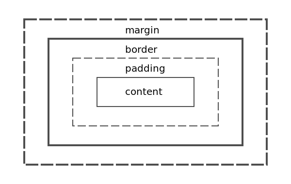

CSS
CSS 樣式
選擇器 {
屬性: 值;
}
div {
width: 200px;
height: 200px;
}
常用 CSS 規則
推薦資源: Bocoup
1. 定位屬性(positioning)
display
元素類型(重要!!)
div {
display: block;
}
position
元素定位(重要!!)
div {
position: relative;
}
position 方向
top、bottom、left、right
div {
position: absolute;
bottom: 0;
top: 0;
left: 0;
right: 0;
}
float
浮動(重要!!)
div {
float: right;
}
.content {
float: left;
}
2. 尺寸(Dimension)
width, height
寬, 高
div {
width: 200px;
height: 200px;
}
max, min
最大尺寸, 最小尺寸
div {
width: 200px;
height: 200px;
max-width: 100px;
max-height: 100px;
min-width: 50px;
min-height: 50px;
}
3. 背景(Background)
background
背景
<!-- 完整寫法 -->
div {
background: #ffffff url("img_tree.png") no-repeat right top;
}
分開寫
div {
background-color: #ffffff;
background-image: url("img_tree.png");
background-repeat: no-repeat;
background-position: right top;
}
4. 文字(Font)
Font-family
文字字型
div {
font-family: "Times New Roman", Times, serif;
}
Font-weight
字體粗細
div {
font-wight: bold;
}
color
顏色
div {
color: #ccc;
}
line-height
行高
div {
line-height: 1em;
}
text-align
文字對齊
div {
text-align: center;
}
text-decoration
文字裝飾
.a-link {
text-decoration: underline;
}
text-shadow
文字陰影(CSS3)(支援度)
.a-link {
text-shadow: 2px 2px 4px #ff0000;
}
5. 邊框(Border)
BORDER
邊框
div {
border: 1px solid #ccc;
}
.content {
border-width: 1px;
border-style: solid;
border-color: #ccc;
}
.content-2 {
border-left: 1px solid #ccc;
}
BORDER-RADIUS
圓角(CSS3)(支援度)
div {
border-radius: 25px;
border-radius: 25px 25px 25px 25px;
}
方向口訣: 左上、右上、右下、左下
6. 內距(padding)
padding
內距
div {
padding: 2px;
}
.content {
padding-left: 2px;
padding-right: 2px;
padding-top: 2px;
padding-bottom: 2px;
padding: 2px 2px 2px 2px;
}
方向口訣: 上、右、下、左
6. 外距(margin)
margin
外距
div {
margin: 2px;
}
.content {
margin-left: 2px;
margin-right: 2px;
margin-top: 2px;
margin-bottom: 2px;
margin: 2px 2px 2px 2px;
}
方向口訣: 上、右、下、左
BOX-MODEL
BOX-sizing
模型寬高基準
div {
box-sizing: content-box;
box-sizing: border-box;
}
Q&A
HTML 5
什麼是 HTML 5？
1. 由 W3C 完成標準制定。
2. 取代 HTML 4.01 和 XHTML 1.0
3. 廣義包刮 CSS 及 Javascript
4. 新增很多語法(video、canvas)
5. 刪除不必要的標籤(font、center)
支援程度

HTML5 仍然在持續的不斷修正中。
HTML5 轉捩點
1 .Youtube 提供 HTML5 播放器
2. 賈伯斯宣布放棄 Flash 相關的支援
HTML 5 語意化
HTML
HTML5

新增標籤(內容)
- <header>: 區塊的標題或者摘要。
- <footer>: 置底版權區域。
- <nav>: 導覽列。
- <section>: 內容區塊。
- <article>: 跟section類似，但更具獨立性。
- <aside>: 附加資訊。
- <hgroup>: section內的標題。
- <figure>: 內容區塊的一種，但拿掉不影響整體內容的表達
- <figcaption>: figure元素的標題。
影音功能
動畫、圖像
離線儲存
- Web Storage
- File API
補充, 參考
Q&A
SASS
什麼是 SASS?
- 1. 撰寫CSS的一種預處理(pre-processing)工具
- 2. 可以提升寫 CSS 效率的程式語言
拼命複製貼上...
- .box li a span { ... }
- .box li a { ... }
- .box li { ... }
- .box li a p { ... }
- .box li p { ... }
- .box li .content { ... }
- .box li h1 { ... }
瘋了....
我們可以更有效率！
打完收工~
還可以找隔壁阿珠喝咖啡
.box {
li {
p { ... }
h1 { .... }
.content { ... }
a {
span { ... }
}
}
}
這麼多? 差在哪?
SASS、SCSS、LESS
?????????
SASS
更簡單的 SCSS
$primaryColor: #eeccff
body
$primaryColor: #ccc
background: $primaryColor
p
color: $primaryColor
a
font-size: 18px
SCSS
最適合初學者
$primaryColor: #eeccff;
body {
$primaryColor: #ccc;
background: $primaryColor;
}
p {
color: $primaryColor;
a {
font-size: 18px;
}
}
LESS
也不賴啦~
@font-color: #ccc;
div{
span {
font-size:20px;
color: @font-color;
b {
color:red;
}
}
i {
font-size:12px;
}
}
我推薦: SCSS
- 簡單
- 易讀
- 範例多
- CSS 轉移快速
SCSS 基本使用
1. 變數
基本運用
Before:
$text-size:18px;
body{
font-size:$text-size;
}
#content{
width:$text-size;
}
After:
body {
font-size: 18px;
}
#content {
width: 18px;
}
變數計算
Before:
$width:200px;
.content {
width: $width;
height: $width*2;
font-size: $width/10;
}
After:
.content {
width: 200px;
height: 400px;
font-size: 20px;
}
2. 函式
@mixin
Before:
@mixin border-radius($angle){
border-radius:$angle;
-webkit-border-radius:$angle;
-moz-border-radius:$angle;
}
#box{
@include border-radius(10px);
}
After:
#box {
border-radius: 10px;
-webkit-border-radius: 10px;
-moz-border-radius: 10px;
}
3. 繼承
@extend
Before:
.ext{
font-size:10px;
width:400px;
}
body{
@extend .ext;
height:600px;
}
After:
.ext, body {
font-size: 10px;
width: 400px;
}
body {
height: 600px;
}
4. 巢狀
巢狀
table {
margin: 2em 0;
tr{
margin: 5px;
}
td {
text-align: right;
}
}
.content {
width: 20px;
height: 10px;
.content-title {
font-size: 18px;
}
}
// 編譯後
table {
margin: 2em 0;
}
table tr {
margin: 5px;
}
table td {
text-align: right;
}
.content {
width: 20px;
height: 10px;
}
.content .content-title {
font-size: 18px;
}
5. 方法
@function
SASS 自帶(參考)
$yDark: darken(#FEDD31,50%);
$color_1: rgba(#102030, 0.5);
$color_2: lighten(#800, 20%);
a {
color: $yDark;
}
6. %
對，別懷疑，我沒打錯，就是"趴"
%
別站著茅坑不拉屎(範例)
// 這是佔著茅坑不拉屎
.all-list-default-style-2 {
display: inline-block;
width: 100px;
height: auto;
}
.list-c {
@extend .all-list-default-style-2;
color: red;
}
.list-d {
@extend .all-list-default-style-2;
color: blue;
}
// %
%all-list-default-style {
display: inline-block;
width: 100px;
height: auto;
}
.list-a {
@extend %all-list-default-style;
color: red;
}
.list-b {
@extend %all-list-default-style;
color: blue;
}
6. Partials
6. Partials
CSS 模組化
優良的 CSS
- 可預測(Predictable)
- 可複用(Reusable)
- 可維護(Maintainable)
- 可擴展(Scalale)
OOCSS
不是新技術，只是設計模式，或者可以說是一種規範，主要可分為：
- 1. 減少 HTML 的依賴
- 2. 增加 class 重複性的使用
減少 HTML 的依賴
css 選擇器: .main-menu ul li a { .... }
好的做法
css 選擇器: .main-menu a { .... }
css 選擇器: .main-menu-link { .... }
增加 class 重複性的使用
.default-button {
display: inline-block;
padding: 8px 18px;
color: #fff;
border-radius: 4px;
&.button-default { background: hsla(30, 10%, 40%, 1); }
&.button-primary { background: hsla(360, 6%, 70%, 1); }
}
按鈕1
按鈕2